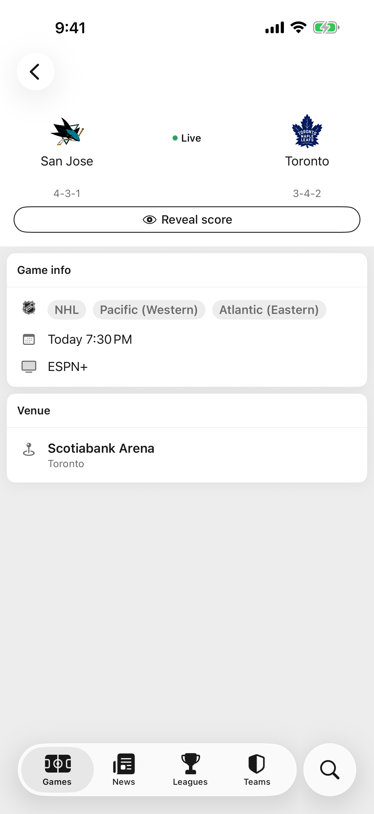
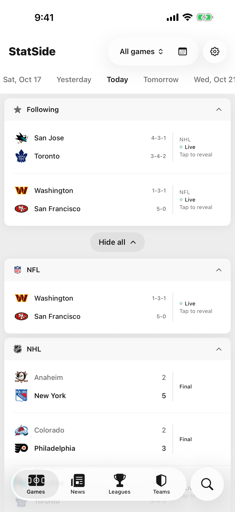

StatSide
Spoiler mode
Watching later?
Hide the score.
Hide the score.
Your teams’ games show Live or Final and nothing more until you tap to reveal. Or hide every game, if you want the whole slate quiet.

